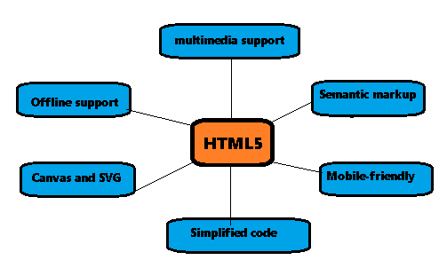

Hyper Text Markup Language
Hyper Text Markup Language

Hypertext Markup Language (HTML) is the standard markup language for documents designed to be displayed in a web browser. It defines the content and structure of web content. It is often assisted by technologies such as Cascading Style Sheets (CSS) and scripting languages such as JavaScript, a programming language.
Web browsers receive HTML documents from a web server or from local storage and render the documents into multimedia web pages. HTML describes the structure of a web page semantically and originally included cues for its appearance.
Development
The evolution of HTML (HyperText Markup Language) mirrors the growth of the World Wide Web itself. Here's a concise timeline of how HTML developed:
- HTML 1.0 (1991–1993)
- Invented by: Tim Berners-Lee
- Purpose: To share simple documents across networks
- Features: Basic structure-paragraphs, headings, links, lists, and images
- HTML 2.0 (1995)
- Standardized by: IETF (Internet Engineering Task Force)
- Included all features from HTML 1.0 plus form elements (like <input> and <textarea> )
- HTML 3.2 (1997)
- Published by: W3C (World Wide Web Consortium)
- Added support for:
- Tables
- Scripting languages like JavaScript
- Basic styles
- HTML 4.01 (1999)
- More structure-focused and cleaner markup
- Introduced:
- Support for styles via CSS
- Separation of content and design
- Forms, scripts, and multimedia improvements
- HTML5 (2014 - Present)
- Major overhaul and current standard
- Developed by: W3C and WHATWG
- Introduced:
- Semantic elements (<section>, <article>, <nav>, etc.)
- Multimedia tags (<audio>, <video>)
Features
